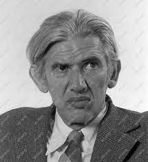

Jánossy Lajos

Életútja
A Tanácsköztársaság bukását követõen, 1919-ben édesanyjával, Bortstieber Gertrúddal és mostohaapjával, Lukács Györggyel együtt elhagyták az országot és Bécsben telepedtek le. Középiskoláit Bécsben járta ki, felsõfokú tanulmányait pedig 1930–1934 között a bécsi és a berlini egyetemeken végezte. 1934-tõl Berlinben, Werner Kolhörster asztrofizikai laboratóriumában dolgozott. A nácizmus és a második világháború elõl menekülve 1936-ban Londonba települt át, és 1938-ig a Birkbeck College-ban végzett kutatómunkát. 1938-tól a Manchesteri Egyetemen, a késõbb Nobel-díjjal kitüntetett Patrick Blackett által irányított kozmikussugárzás-kutató csoportban folytatott asztrofizikai vizsgálatokat. 1947-tõl Walter Heitler és Erwin Schrödinger kvantumfizikusok hívására a Dublin Institute for Advanced Studies professzoraként és a kozmikus sugárzást tanulmányozó laboratóriumi kutatócsoport vezetõjeként dolgozott.
1950-ben a Dobi István-kormány mindent megtett azért, hogy Jánossy visszatérjen Magyarországra. Rendes akadémiai tagságot kínáltak fel számára (noha nem volt az Akadémia levelezõ tagja), egyúttal kinevezték a budapesti Eötvös Loránd Tudományegyetem tanárává és az MTA akkor alapítandó Központi Fizikai Kutatóintézetének (KFKI) osztályvezetõjévé, a Kozmikus Sugárzási Laboratórium vezetõjévé. Jánossy élt a lehetõséggel, még 1950-ben hazatért, elfoglalta a felajánlott posztokat és jelentõsen hozzájárult a mûködését végül 1951-ben megkezdõ KFKI szervezési munkálataihoz. 1954-tõl a kutatóintézet igazgatóhelyettese, 1956-tól igazgatója, 1970-tõl haláláig tudományos tanácsadója és igazgatótanácsának tagja volt. Ezzel párhuzamosan a budapesti tudományegyetem elméleti fizikai tanszékén oktatott, majd 1957 és 1970 között az atomfizikai tanszék elsõ vezetõje volt. Kutatóintézeti igazgatói mivoltában kíméletlenül eltávolította az intézetbõl azokat, akik vezetõi voltak 1956-ban a KFKI Forradalmi Bizottságának, noha annak maga is tagja volt.
Politikai szerepvállalását az is jelzi, hogy 1962-tõl haláláig tagja volt a Magyar Szocialista Munkáspárt Központi Bizottságának, emellett szerepet vállalt a fõvárosi XII. kerületi pártszervezet és a KFKI végrehajtó bizottságának pártmunkájában is
Fõbb mûvei
1. Cosmic rays, Dublin, Dublin Institute for Advanced Studies, 1947, 56 o.
2. Cosmic rays and nuclear physics, London, Pilot Press, 1948, 186 o.
3. Magyarul: Kozmikus sugárzás, Budapest, Mûvelt Nép, 1954, 137 o.
4. Olaszul: Raggi cosmici e fisica nucleare, Milano, Bompiani, 1954, 275 o.
5. Németül: Einführung in die kosmische Strahlenforschung, Berlin, Deutscher Verlag der Wissenschaften, 1955, 148 o.
6. Lengyelül: Promienie kosmiczne, Warszawa, Wiedza Powszechna, 1956, 158 o.
7. Bolgárul: Koszmicsni lacsi, Szofija, Akad, 1957, 141 o.
8. Cosmic rays, Oxford, Clarendon Press, 1948, 424 p.
9. Oroszul: Koszmicseszkije lucsi, Moszkva, 1949, 464 o.
10. Philosophical analysis of the special theory of relativity, Budapest, Central Research Institute of Physics, 1960, 76 o.
11. Magyarul: Filozófiai megjegyzések a speciális relativitáselméletrõl, Budapest, Központi Fizikai Kutatóintézet, 1960, 62 o.
12. Überlegungen zu den Grundlagen der Wahrscheinlchikeitsrechnung, Berlin, Akademie-Verlag, 1960, 23 o.
13. Reflections of the problem measuring the velocity of light, Budapest, Central Research Institute of Physics, 1963, 42 o.
14. Atommaglexikon, fõszerk. Jánossy Lajos, Budapest, Akadémiai, 1963, 453 o.
15. A relativitáselmélet filozófiai problémái, Budapest, Akadémiai, 1963, 351 o. (Elek Tiborral)
16. A relativitáselmélet problémaköre a Lorentz-elv megvilágításában, szerk. Siklós Tivadar, Budapest, Központi Fizikai Kutatóintézet, 1964, 47 o.
17. Theory and practice of the evaluation of measurements, Oxford, Clarendon Press, 1965, 481 o.
18. Oroszul: Tyeorija i parktyika obrabotki rezultatov izmerenyij, Moszkva, Mir, 1965, 462 o.
19. Magyarul: Mérési eredmények kiértékelésének elmélete és gyakorlata, Budapest, Akadémiai, 1968, 527 o.
20. A valószínûségelmélet alapjai és néhány alkalmazása különös tekintettel mérési eredmények kiértékelésére, Budapest, Tankönyvkiadó, 1965, 206 o.
21. Relativitáselmélet és fizikai valóság, Budapest, Gondolat, 1967, 327 o.
22. Angolul: Theory of relativity based on physical reality, Budapest, Akadémiai, 1971, 317 o.
23. Bolgárul: Teoriâta na otnositelnostta i fizièeskata dejstvitelnost, Szofija, Akad., 1973, 269 o.
24. Japánul: Butsurigakuteki sotaisei riron, Tokyo, Kodansa, 1974, 384 o.
25. Fizika, I–III. köt., Budapest, Tankönyvkiadó, 1969–1971. (Fõzy Istvánnal és Kulin Györggyel)
26. Papers published from 1934 to 1971, I–V. köt., Budapest, Central Research Institute of Physics, 1962–1971.
27. Valószínûségszámítás, Budapest, Tankönyvkiadó, 1972, 61 o. (Tasnádi Péterrel)
28. Vektorszámítás, Budapest, Tankönyvkiadó, 1973, 470 o. (Tasnádi Péterrel)
29. Relativitáselmélet a fizikai valóság alapján, Budapest, Akadémiai, 1973, 311 o.
30. Szemléletes differenciálszámítás: Függvényektõl a differenciálásig, Budapest, Tankönyvkiadó, 1974, 166 o. (Jánossy Istvánnal).
31. Szemléletes integrálszámítás, Budapest, Tankönyvkiadó, 1974, 154 o. (Jánossy Istvánnal)
32. Fejezetek a mechanikából, szerk. Sas Elemér, Budapest, Minerva, 1975, 151 o.
33. Vektorszámítás, I–III. köt., Budapest, Tankönyvkiadó, 1980–1983. (Tasnádi Péterrel és Gnädig Péterrel)
34. Vektorok integrálása, Budapest, Franklin, 1983, 398 o. (Tasnádi Péterrel és Gnädig Péterrel)
35. Vektorok és tenzorok differenciálása, Budapest, Franklin, 1989, 253 o.